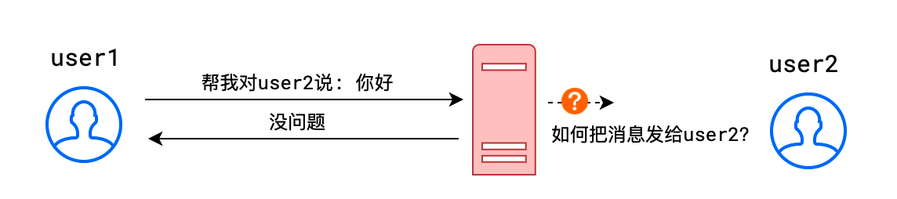
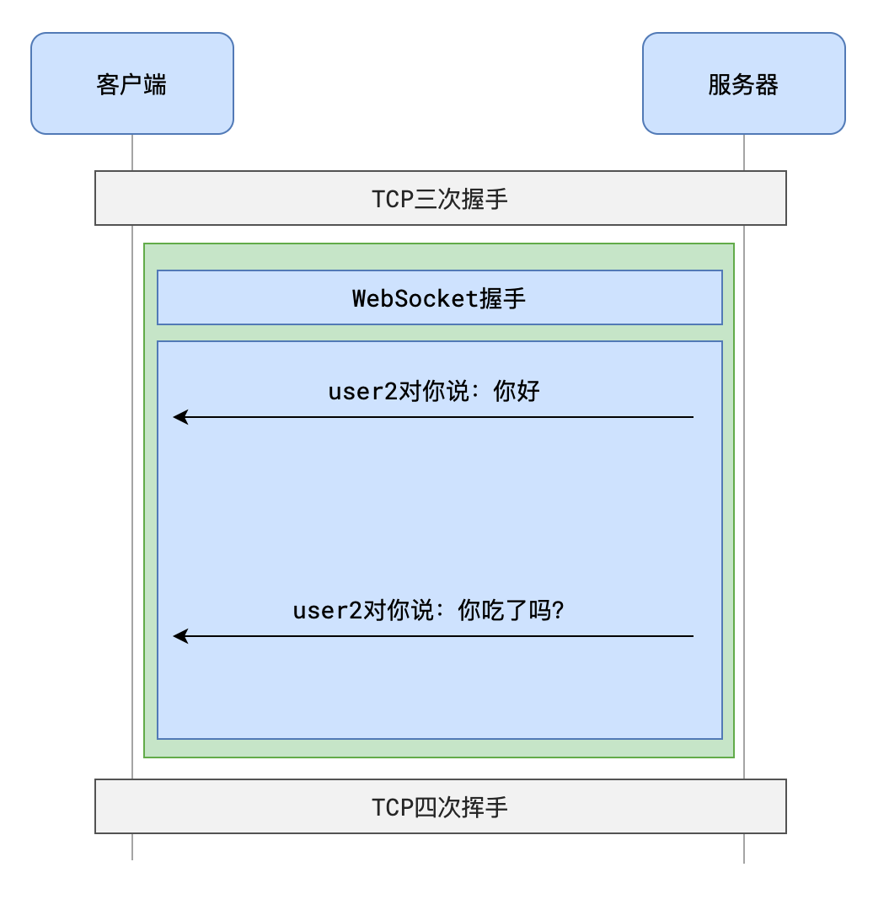

实时场景的旧处理方案
考虑网页中的以下场景：
- 股票 K 线图
- 聊天
- 警报、重要通知
- 余座
- 抢购页面的库存
- ……
上述场景有一个共同特点——实时性
这种对实时性有要求的页面，会带来一些问题
比如下面的聊天场景

由于 HTTP 协议是请求-响应模式，请求必须在前，响应必须在后，这就导致了服务器无法「主动」的把消息告诉客户端。
开发者想了很多办法来解决这一问题
当然终极解决方案自然是 WebSocket，但了解过去的一些做法、参观前辈们经历的痛苦还是有益的。
短轮询 short polling
短轮询是一种「话痨式」的方式
客户端每隔一小段时间就向服务器请求一次，询问有没有新消息

实现短轮询是非常简单的，客户端只需要设置一个计时器不断发送请求即可
这种方案的缺陷是非常明显的：
- 会产生大量无意义的请求
- 会频繁打开关闭连接
- 实时性并不高
长轮询 long polling
我们的前辈在有限的条件下，充分发挥智慧，来解决短轮询的问题，于是演化为长轮询
sequenceDiagram
客户端->>+服务器: 有新消息吗？
Note right of 服务器: 没有消息不会响应
Note right of 服务器: 一段时间后...
服务器->>-客户端: user1对你说：你好
客户端->>+服务器: 有新消息吗？
Note right of 服务器: 没有消息不会响应
Note right of 服务器: 一段时间后...
服务器->>-客户端: user1对你说：你吃了没
客户端->>服务器: ......
长轮询有效的解决了「话痨问题」，让每一次请求和响应都是有意义的
但长轮询仍然存在问题：
- 客户端长时间收不到响应会导致超时，从而主动断开和服务器的连接
这种情况是可以处理的，但 ajax 请求因为超时而结束时，立即重新发送请求到服务器
虽然这种做法会让之前的请求变得无意义，但毕竟比短轮询好多了
- 由于客户端可能「过早的」请求了服务器，服务器不得不挂起这个请求直到新消息的出现。这会让服务器长时间的占用资源却没什么实际的事情可做。
WebSocket
伴随着 HTML5 出现的 WebSocket，从协议上赋予了服务器主动推送消息的能力

从上图可以看出：
- WebSocket 也是建立在 TCP 协议之上的，利用的是 TCP 全双工通信的能力
- 使用 WebSocket，会经历两个阶段：握手阶段、通信阶段
虽然优于轮询方案，但 WebSocket 仍然是有缺点的：
- 兼容性
WebSocket 是 HTML5 新增的内容，因此古董版本的浏览器并不支持 - 维持 TCP 连接需要耗费资源
对于那些消息量少的场景，维持 TCP 连接确实会造成资源的浪费
为了充分利用 TCP 连接的资源，在使用了 WebSocket 的页面，可以放弃 ajax，都用 WebSocket 进行通信，当然这会带来程序设计上的一些问题，需要权衡。
握手
WebSocket 协议是一个高扩展性的协议，详细内容会比较复杂，这里仅讲解面试中会问到的握手协议
当客户端需要和服务器使用 WebSocket 进行通信时，首先会使用HTTP 协议完成一次特殊的请求-响应，这一次请求-响应就是WebSocket 握手
在握手阶段，首先由客户端向服务器发送一个请求，请求地址格式如下：
# 使用HTTP
ws://mysite.com/path
# 使用HTTPS
wss://mysite.com/path
请求头如下：
Connection: Upgrade /* 嘿，后续咱们别用HTTP了，升级吧 */
Upgrade: websocket /* 我们把后续的协议升级为websocket */
Sec-WebSocket-Version: 13 /* websocket协议版本就用13好吗？ */
Sec-WebSocket-Key: YWJzZmFkZmFzZmRhYw== /* 暗号：天王盖地虎 */
服务器如果同意，就应该响应下面的消息
HTTP/1.1 101 Switching Protocols /* 换，马上换协议 */
Connection: Upgrade /* 协议升级了 */
Upgrade: websocket /* 升级到websocket */
Sec-WebSocket-Accept: ZzIzMzQ1Z2V3NDUyMzIzNGVy /* 暗号：小鸡炖蘑菇 */
握手完成，后续消息收发不再使用 HTTP，任何一方都可以主动发消息给对方